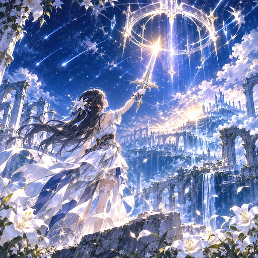
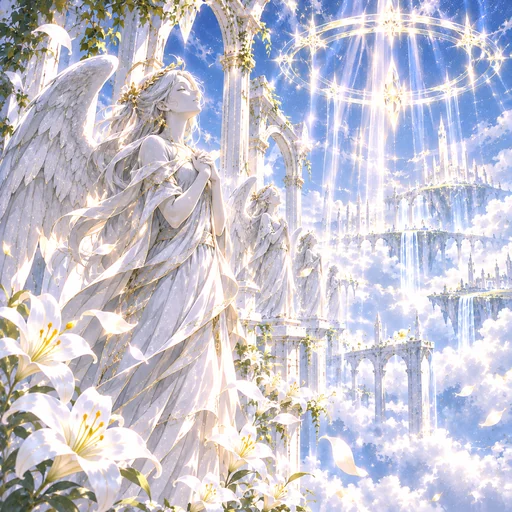

自分のmp3を読み込むだけで、譜面が自動で作られる4レーンのリズムゲーム。ブラウザで動くので、インストールも登録もいりません。
このゲームについて
Starfall Horizonは、星が降る廃墟の街をイメージした、4レーンのリズムゲームです。ノーツは4本のレーンを流れてきて、判定ラインに重なったタイミングでタップします。長く伸びたホールドノーツは、伸びている間ずっと押し続けます。
いちばんの特徴は、曲を選ぶのではなく、曲を持ち込めることです。手元のmp3を読み込むと、ゲームが音を解析してテンポ（BPM）を調べ、そのテンポに合わせて譜面を自動で作ります。AIで作った曲や、自分で作った曲、手持ちの音源で、すぐに遊べます。
mp3を持っていない人のために、制作者のオリジナル曲を公式曲として8曲収録しています。どれも歌詞のないインストゥルメンタルで（曲によってバックコーラスが入る程度）、リズムを追いやすい曲です。
遊び方
操作
- パソコン：キーボードの D F J K が、左から順に4本のレーンに対応します。
- スマホ・タブレット：画面下のレーンを直接タップします。複数の指で同時に押せます。
- ホールドノーツ：長いノーツは、始まりでタップして、終わりまで指（キー）を離さずに押し続けます。
判定ラインは、指でノーツが隠れないよう、画面のやや高い位置に置いてあります。位置はオプションで変えられます。
判定
タイミングのズレに応じて、PERFECT、GREAT、GOOD、BAD、MISSの5段階で判定されます。ズレが小さいほど得点が高くなり、MISSとBADはコンボが途切れます。難易度が高いほど、判定の幅は少しずつ厳しくなります。
スコアとランク
満点は1,000,000点です。ホールドノーツは、通常のノーツ2つぶんの点数になります。点数に応じて、次のランクが付きます。
| ランク | スコア |
|---|---|
| SS | 970,000点以上 |
| S | 900,000点以上 |
| A | 800,000点以上 |
| B | 650,000点以上 |
| C | 650,000点未満 |
難易度ごとのベストスコアは、この端末の中に保存されます。公式曲では、難易度ごとに、曲ごとの最高得点を合計した「総合評価」も見られます（マイソングは含みません）。
難易度
難易度は、BEGINNER、EASY、NORMAL、HARD、EXPERTの5段階です。同じ曲でも、拾う音の細かさが変わります。
| 難易度 | ノーツの置き方 |
|---|---|
| BEGINNER | 2拍に1回、はっきりした音のところだけにノーツを置きます。同時押しもホールドもなく、判定も甘めです。リズムゲームが初めての人向けです。 |
| EASY | 拍の頭を中心に、ゆったり置きます。同時押しはありません。はじめての人向けです。 |
| NORMAL | 拍の頭に加えて、8分音符の音を拾います。同時押しはありません。 |
| HARD | 16分音符の細かい音まで拾い、同時押しも少し入ります。 |
| EXPERT | 音の細かい動きをほぼ拾い、同時押しとホールドが多く入ります。判定も最も厳しくなります。 |
低い音（キックやベース）が目立つ場所は内側の2レーン、高い音（ハイハットやメロディ）が目立つ場所は外側の2レーンに、ノーツが置かれやすくなります。曲の音の動きが、そのまま指の動きになります。
自分のmp3で遊ぶ
- ゲームの「MY SOUND」を開き、「mp3をえらぶ」から曲を選びます。
- ゲームが曲を解析して、BPMと最初の拍の位置を自動で調べます。
- 設定画面で、BPMとタイミングを聞きながら微調整できます。メトロノームの音と曲が合っていれば完了です。
- 難易度を選んで、プレイを始めます。
「この端末におぼえておく」にチェックを入れると、曲がこの端末の中に保存され、次回から選ぶだけで遊べます。保存できるのは12曲まで、1曲40MBまでです。ジャケット画像も、自分の好きな画像に変えられます。
曲のファイルは、あなたの端末の中だけで処理されます。サーバーへ送信されることはありません。権利のある曲だけを使ってください。
公式曲
制作者のはぜるが、Sunoで作ったオリジナルのBGMを8曲収録しています。公式曲は、曲を選ぶだけで遊べます。曲のBPMは事前に調べてあります。新しい曲は、今後も追加していく予定です。

星降る叙事詩壮大で映画的。ピアノとバイオリンが空を駆けます。- クリスタル・シグナル電子の音から始まり、勝利の場面へ向かう一曲。

天上の合唱天使のようなコーラスが重なる、荘厳でやさしい曲。- クローバー・リールフィドルが踊る、軽快で陽気なケルト風の曲。
- 白夜の水晶北欧の森の湖を思わせる、静かで透きとおった曲。
- ガラスの鐘のフーガハープシコードが重なっていく、優雅なバロック風の曲。
- 星屑のアルペジオ ～遥か～夜明けの空へ流れる、やさしく希望のある曲。
- 星屑のアルペジオ ～彼方へ～「遥か」と対になる、星空へ高く広がる曲。
よくある質問
音が鳴りません。
スマホのブラウザは、画面をタップするまで音を鳴らせません。曲を選ぶ操作の後に鳴ります。それでも鳴らない場合は、端末のマナーモードと音量を確認してください。
メトロノームと曲が合いません。
自動で調べたBPMは、曲によってずれることがあります。特に、テンポが途中で揺れる曲では、前半と後半で合わなくなります。設定画面でBPMを少しずつ動かして、合うところを探してください。
曲が読み込めません。
mp3、m4a、wav、oggなどの音声ファイルを選んでください。8秒より短い曲や、40MBを超える曲は読み込めません。
保存した曲やベストスコアが消えました。
曲とスコアは、お使いのブラウザの中に保存されています。ブラウザのサイトデータを削除したり、プライベートブラウズで開いたりすると、消えることがあります。別の端末やブラウザには引き継がれません。
ノーツが音とずれて感じます。
オプションの「タイミング調整」で、ノーツが曲より早い・遅いと感じる分を調整できます。ワイヤレスイヤホンを使うと、音が遅れるので、その分を補正してください。
費用はかかりますか。
かかりません。登録も不要です。
更新履歴
| 2026年11月12日 | 公式曲8曲を収録。公式曲モードを追加しました。 |